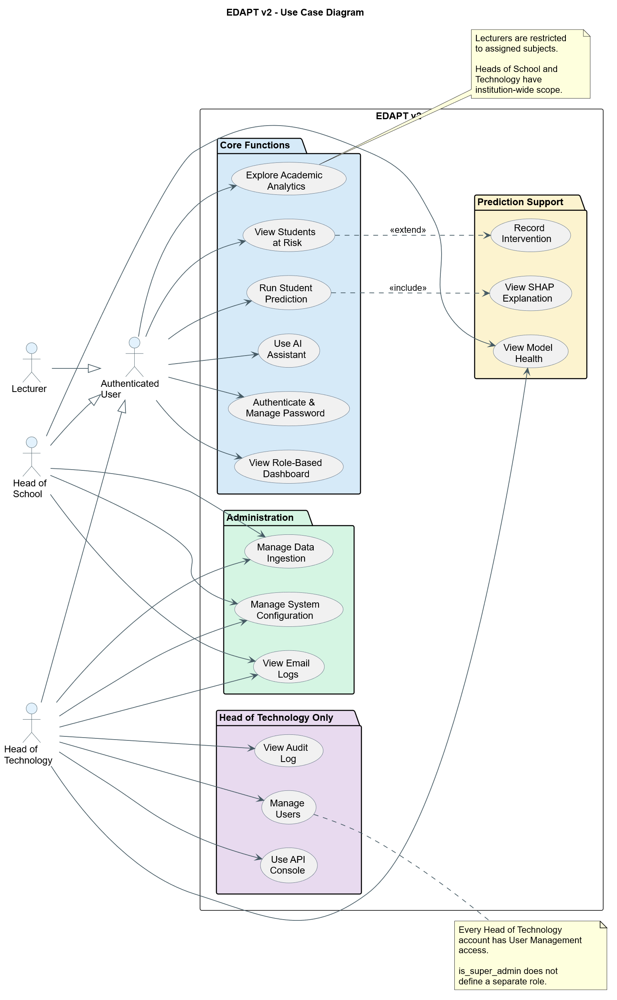
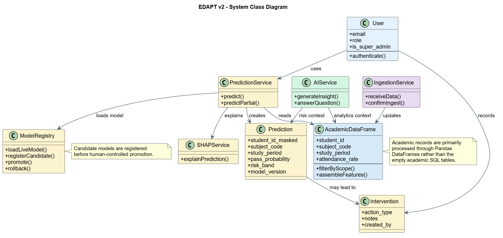
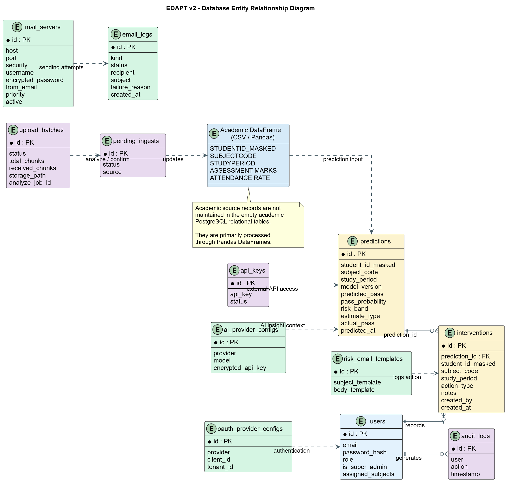
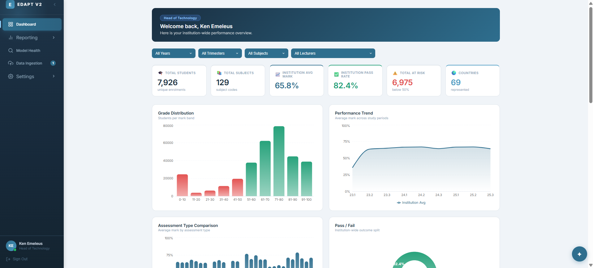
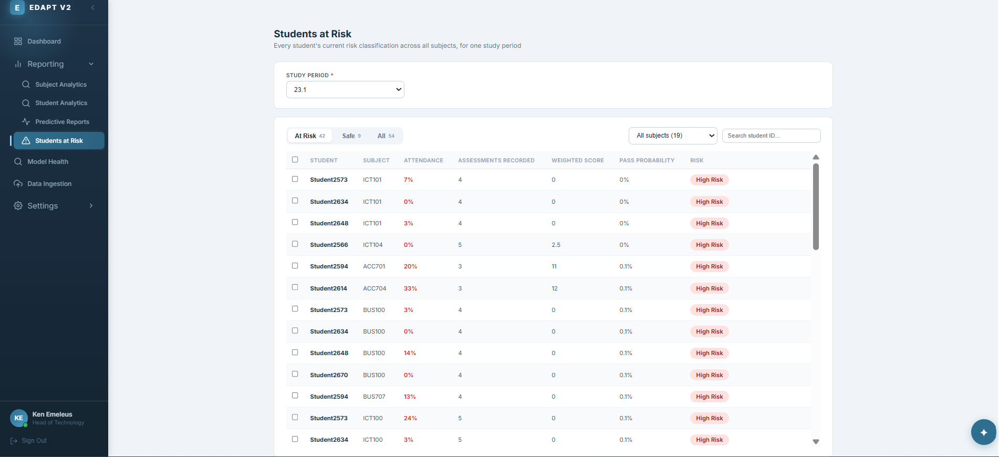
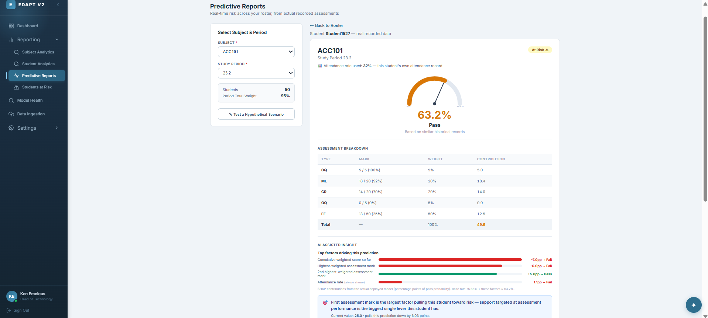
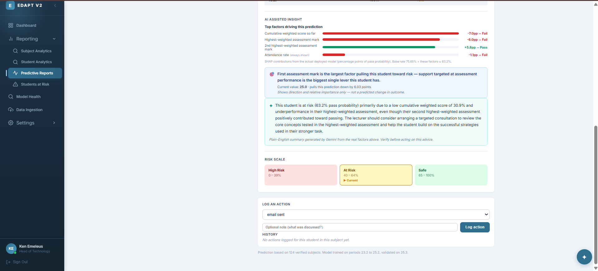
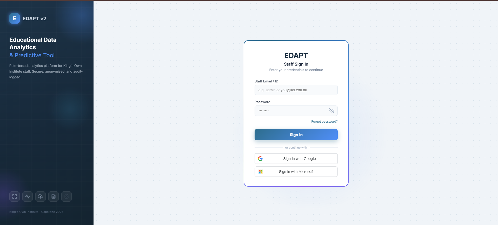
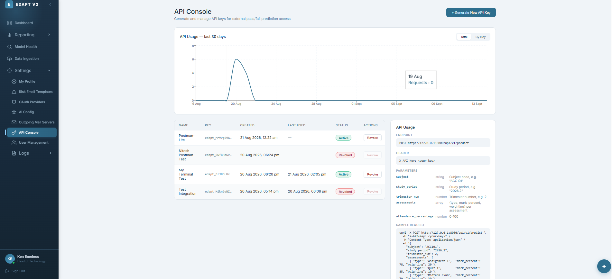

Educational Data Analytics & Predictive Tool — a role-based analytics platform that turns disconnected CSV extracts into early, explainable warnings about student risk.
Descriptive and predictive analytics, evaluated to a technically and ethically defensible standard — not a black box, and not a single reported accuracy figure.
Dashboards, predictions and at-risk students for the subjects they actually teach.
Academic analytics and shared admin across data ingestion, model health and AI configuration.
Everything above, plus the audit log, user management and the API console.
Role-scoped SPA; navigation guards for UX, never the security boundary.
Auth, business logic, the ML pipeline, and every external-service call.
Relational store for operations; academic data lives in-memory for speed.
Proven in practice: the AI provider layer went from one hardcoded integration to a runtime-configurable one — with zero changes to the layers on either side.
Uvicorn for development; Gunicorn with multiple Uvicorn workers in production.
SQLAlchemy 2.0 with the async driver asyncpg end to end.
SMOTE for class imbalance, SHAP for explanation, Joblib for model serialisation.
Recharts for data presentation, Axios for the API calls.
Separate configurations for development and production.
The trimester was tracked against these six phases, with weekly snapshots cross-referenced against the project's own progress log — not a plan made once and forgotten.



Users, predictions, interventions, audit logs, mail servers and AI provider configs live here. Academic source records don't — they're processed through Pandas DataFrames, not maintained as empty relational tables.
Feeding partial data to the complete-record model first hit 100% training accuracy — a textbook sign of leakage, not skill. Hence a second model, trained only on what a mid-term snapshot actually contains.
Passing students outnumber failing ones — accuracy alone would flatter a model that misses the exact students it exists to find. We report the fail-class metrics instead, each on the same 0–1 scale.
Configured at runtime through one dispatch function — switching providers, models or keys needs no redeploy.
One or more mail servers, credentials encrypted at rest. Templated notifications for password-reset OTPs and connection tests — every send logged as "sent" or "failed," never falsely "delivered."
Every capability is a versioned endpoint with OpenAPI docs generated automatically — exposed to Head of Technology as the API Console.
Behaviour the student can actually change — attendance, assessment coverage, submission timing.
Subject difficulty, assessment weighting, age, background — high SHAP weight, zero use to a student.
SHAP contributions are reconstructed against the model's real output as part of the automated test suite — the explanation is checked, not just displayed.






Validation rules, boundary conditions, SHAP reconstruction.
Frontend → API → DB → background jobs, end to end.
Every dashboard number checked against a real institutional extract.
Walked through with the client, role by role.
An "at-risk" count was tallying assessment rows, not students. Fixed to count unique students.
A live prediction outage ran undetected — the suite only ever tested half the serving path.
A valid JWT outlived the account it belonged to. Now checked against the database, every request.
Once corrected and compared fairly, the current model wins on F1 and PR-AUC — on its own merits, not an inflated one.
Shown on a log scale — each row is a different unit (students, then records, then sessions), not a single comparable total.
Pseudonymised is not anonymised, and we don't claim otherwise — re-identification risk from combined attributes hasn't been ruled out.
Made private the moment it was found
Exposed history scrubbed; other files audited for the same risk
One action still outstanding — deliberately not marked "resolved"
We'd rather report an honest, incomplete fix than a tidy, false one.
Students aged 0–20 currently show lower fail-class recall; one building shows an unexplained pass-rate gap. Neither is dismissed, neither is overstated — both wait on more retraining cycles.
JWT + bcrypt for sessions, Fernet-encrypted credentials, a scoped audit log. A leaked env-file's credentials were found already dead — verified by testing them, not by hoping.
Questions — about the model, the incident, or anything in between.